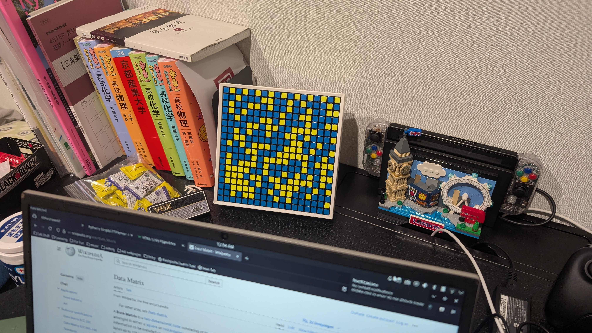

a couple days ago, i felt the sudden urge to clean up my desk. in the midst of all the egregious clutter, my eyes were drawn to...
the GAN Mosaic Cube 6x6
i'd completely forgot about it and hadn't touched for so long that it was collecting dust on the top. wanting to give it new purpose, i had the brilliant idea to make it a scannable code that links to my homepage. the mosaic set that i have is 6 cubes by 6 cubes which is 18x18 pixels, or definitely not enough for a qr code. after some research on alternative two-dimensional barcodes, i chose to use a data matrix code because it was the only widespread code that fit. due to each "pixel" having a black border, figuring out the best color combination was very important. after testing many different palletes, i found blue and yellow to be the most easily recognizable by my phone. although it does not scan instantly all the time, it does work and most importanty looks pretty damn awesome. here's a picture of the final product on my desk (click on the image to view at full size):

note that the default camera app doesn't scan data matrix codes, so you need to use a third party app (lame af). i used google lens.